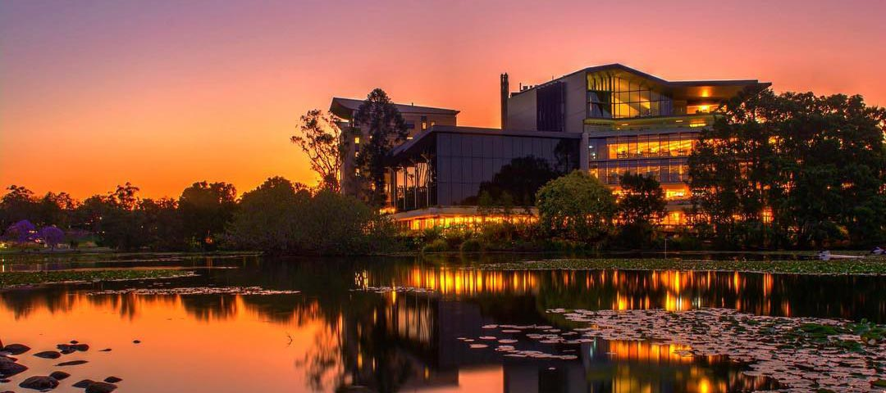

Note this is a placeholder website. Registration and more detailed information will be available soon.
The Annual Scientific Meeting of the Astronomical Society of Australia (ASA) for 2019 will be held at the University of Queensland, St Lucia Campus, Brisbane, QLD, Australia.
The conference will be held in the Parnell building.
A rough timeline is as follows:
The Scientific Organising Committee
The Local Organising Committee
Conference Organiser
Kylie Williams and Kate Gunn. Contact: kylie.williams@darkenergyevents.com.au
The nicest way to get to UQ from the City, Southbank, West End, or Milton, is by city cat on the river. To pay for your ferry ticket you will need cash and payment is taken on the ferry, no cards.
Brisbane has an extensive public transport network including buses, trains and ferries. The Loop is a free bus service that runs through Brisbane's Central Business District. It has numerous major stops including Central Station, Queen Street Mall, Botanic Gardens, Riverside Centre, QUT and King George Square. For all other paying bus services get your tickets from bus and ferry operators, newsagents and City Council Customer Service Centres. Children under five years travel free and those aged five to fifteen years travel for half price.
You can pick up bus timetables from Council Customer Service Centres, Queen Street Bus Station Information Centre, Garden City Bus Interchange, newsagents, and libraries.
TransLink coordinates bus, train and ferry services throughout south-east Queensland. For more information about fares, timetables, tickets and services please visit: the Queensland transport website.
Brisbane Airport is the primary international airport serving Brisbane and South East Queensland. It is the third busiest Australian airport. The airport services 26 airlines flying to 42 domestic and 28 international destinations. The airport has numerous facilities including ATMs and currency exchange, baggage wrapping, toilets and showers, parents rooms. mobile charging stations, etc.
You can travel to Brisbane City and the University of Queensland via the following methods:
Childcare will be available for infants and children under 5. Please indicate in your registration if you require childcare or contact Kylie Williams.